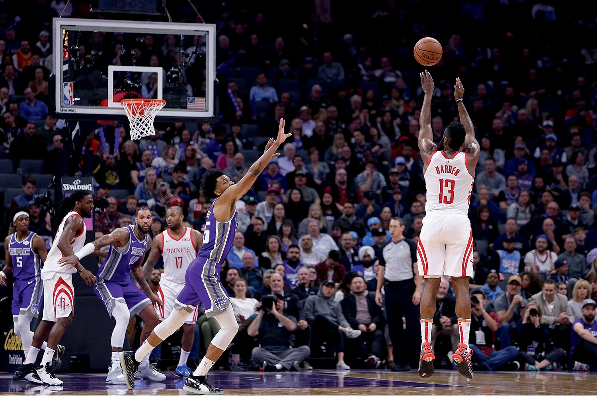

Um dos maiores e mais marcantes clássicos do Brasil, o Fla-Flu soma mais de 400 partidas jogadas em toda a história das duas equipes. O primeiro aconteceu há mais de um século, em 7 de julho de 1912, com vitória do Fluminense por 3 a 2, o mais recente terminou com vitória por 2 a 0 do Flamengo em duelo válido pelo Campeonato Carioca de 2024.
A Mercedes dominou o segundo treino livre do Grande Prêmio do Bahrein, nesta quinta-feira (29). A etapa de Sakhir é a primeira das 24 da temporada 2024 da Fórmula 1.
Lewis Hamilton foi o protagonista da sessão. Primeiro, assumiu a liderança com a marca de 1:30.751. Depois, a cerca de 30 minutos para o fim, melhorou o próprio tempo para 1:30.374, isolando-se na liderança sem chances para a concorrência.
Logo atrás do heptacampeão, George Russell foi o segundo colocado. Com o tempo de 1:30.580, ficou a 0.206 da melhor marca do companheiro de Mercedes.
"Várias dezenas de milhares de novos ingressos serão colocados à venda para o "Especial Atletismo". Este é um de uma série de eventos surpresa organizados pela Paris 2024 nas próximas semanas que antecedem os Jogos", informou a Paris 2024 em um comunicado.

A quinta-feira (29) do melhor basquete do mundo será de muita emoção. Oito jogos agitam a temporada regular da NBA. O apito inicial é às 21h e a emoção vai até a madrugada.
A noite começa com uma revanche. Após levar uma “surra”, o Charlotte Hornets volta a enfrentar o Milwaukee Bucks, desta vez como mandante.
Na sequência, o Golden State Warriors, sonhando com uma vaga direta aos playoffs, visita o New York Knicks. Pouco mais tarde, o lanterna da Conferência Oeste, San Antonio Spurs, recebe o empolgante Oklahoma City Thunder.